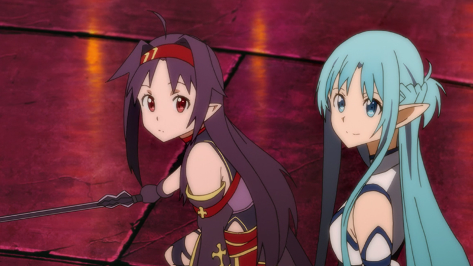

第1集 枪的世界
- 回到现实世界快要满一年，桐人也逐渐适应现实。这天，他和亚丝娜约在东京的皇居见面，两人谈论著现实与虚拟世界的不同。而在那同时，热门拟真线上游戏“Gun Gale Online”中，却发生了有人在游戏里受到枪击，在现实中也同时心脏衰竭的奇特案件，并且类似的案件有二件。政府"假想课"的课员菊冈调二郎找上了桐人，希望他能潜入“Gun Gale Online”与凶手接触...
第2集 冰之狙击手
- 使用大型反物质狙击枪“黑卡蒂II”而活跃于GGO世界的中的狙击手少女诗乃与她所属的六人中队正在伏击另一组中队。诗乃成功狙击第一目标后，对第二目标——一名巨汉的狙击却是以行动失败收场。同时，该名巨汉在披风下的武器的真面目，居然是一把迷你炮机枪。它的压倒性的火力，让情势一下子逆转。面对心生退意的队友们，一心追求挑战强者的诗乃将会...
第3集 鲜血的记忆
- 诗乃，也就是朝田诗乃在现实中的“朋友”远藤等人，以诗乃的弱点“枪”来威胁诗乃交出一万日元，幸好诗乃的朋友新川恭二及时救下了她。回到家后，诗乃仍陷在恐慌之中。其实，诗乃只要看到会让她联想到枪的东西，就会陷入恐慌，而其原因在于她小时候的某一段记忆。
第4集 GGO
- 为了调查在虚拟世界向游戏角色开枪而现实世界操纵该角色的人类也跟着死亡的“死枪案”，桐人登入了GGO。来到新的世界后，因为角色的长相而有些无措以及找不到路的桐人向街上遇到的少女诗乃求助。诗乃误将桐人的M9000系列角色看成了女性角色，答应了他的请求，随后，诗乃带着桐人前往了商场。
第5集 枪与剑
- 在摩托的飞驰之下，桐人和诗乃到达了总统府，在最后关头成功报名参加了能赢得GGO「最强」称号的比赛“Bullet of Bullets”。而桐人参加BBO是为了出名，让死枪盯上他。在那之前，在准备室换战斗装准备参加预赛的时候，桐人自我介绍，并坦白了自己是男性角色的事实，结果被华丽地打了一巴掌。
第6集 旷野的决斗
- 桐人在预赛获胜，回到休息区待命，却遇到了一个奇怪的玩家。桐人发现他应该是SAO事件的生还者，也是杀人工会的一员。这件事让桐人陷入思考，不久之后他便察觉，那个玩家的声音，跟记录中的"死枪"的声音一样。 从本集起OP中“死枪”手中开始没有枪，露出绷带下微笑棺木的标志
第7集 红色的记忆
- 桐人的妹妹直叶发现了桐人将账号转移至GGO之中的事。虽然直叶不希望桐人以身试险，但是直叶还是没有太过追究。是夜，桐人突然回忆起SAO自己杀了三名“微笑棺木”的成员的事件，就算那已经过去了一年，桐人还是难以忘却那段记忆，辗转难眠。第二天，在安岐护士的安慰和劝说之下，桐人终于扶正了一点心态，登陆了GGO。

第8集 Bullet of Bullets
- BoB决赛即将开始，桐人因为其独特的战斗方式而受到了不少玩家的瞩目。桐子卖萌。在休息的时候，桐人对诗乃讲起SAO的那段往事，诗乃表示理解，桐人也下了“我一定会活下来直到与你相遇为止”的决定。二十分钟后，BoB决赛正式开始，在混乱的“ASL诸神之黄昏”之中，“死枪”出现了……

第9集 死枪
- 破斗篷男在对Pale Rider枪击之后，Pale Rider的HP尽管还有剩余，却还是消失了。破斗篷男自己说出了自己是死枪，并宣言会带来真正的死亡。通过MMOSTREAM节目转播观战BoB的亚丝娜等人，发觉了死枪是Laughing Coffin的原干部，受到了冲击。另一方面，桐人和诗乃为了在出现更多的受害者之前打倒死枪，共同合作追赶死枪，但却使自己陷入了恐慌......
第10集 死之追击者
- 受到来自背后的死枪的突袭而走投无路的诗乃，没想到死枪用的手枪是和她曾射杀的抢劫犯用的一样的黑星五四式。死枪为了让桐人认真起来干架，而想杀了因回溯起邮局事件记忆而变得茫然若失的诗乃。但就在黑星扳机扣下前的千钧一发之际，桐人急忙赶到将诗乃救了出来。打算带着丧失了战意的诗乃逃走的桐人，受到了死枪的追击而陷入了困境。


第11集 强大的意义
- 从死枪枪下逃脱的桐人和诗乃，藏身在了沙漠地带的洞窟里。在那里桐人研究起了死枪杀害玩家的方法。死枪反击桐人的时候没有用黑星手枪而是换上了狙击枪，从这一点推理出杀害现实世界的玩家是有某些条件的。进一步进行推理的桐人，想到了某种可怕的可能性。


第12集 虚幻的子弹
- GGO玩家桐人和诗乃，死枪和前大会优胜者的暗风了也迎来最终决战。死枪的共犯有好几个人，暗风也成为死枪目标的可能性不能否定，所以桐人比死枪先打倒暗风后，并且也决意击倒死枪。桐人自己成为诱饵，再次出来，诗乃负责协同狙击作战。他那样信赖的回应使诗乃战略瞄准了死枪，桐人终于与死枪对峙,现实世界亚丝娜赶到了桐人身边……
第13集 幽灵子弹
- 死枪模仿出了GGO里不存在的SAO中的技能"星屑飞溅"，受到他的剑技攻击的桐人，被逼到了绝境。死枪不仅枪法，连剑术都相当高超，被他紧逼着的桐人逐渐被夺去了HP值。另一方面，在和死枪对狙中瞄准镜遭破坏而导致无法狙击的诗乃只能眼睁睁地看着桐人和死枪的战斗。她咬紧牙根拼命思考着眼前自己能够做到的事情。

第14集 小小的一步
- 将诗乃杀害后自己也会随她而去，这样表述着的恭二猛扑了过来。但是，千钧一发之际桐人赶到，恭二被击飞。互相缠斗的过程中，恭二对着桐人按下了装有毒药的注射器。万幸的是药液并未注入他体内，桐人得以逃过一劫。之后，桐人、诗乃与菊冈会面，了解到了有关此次事件的前因后果。作为死枪之一而被逮捕的男子，委托菊冈给桐人带去了口信。
第15集 湖之女王
- 《ALO》里传出了圣剑Excalibur被发现了的消息。那是几个月前，桐人和莉法在地下世界幽兹海姆救助了名为冬奇（注：妹妹命的名）的邪神时发现了的物品。得知了这个消息的2人，决心赶在其他玩家前取得Excalibur。（于是）叫上了亚丝娜、克莱因、诗乃等人，以7人团队前往迷宫幽兹海姆。

第16集 巨人之王
- 桐人等人从女神兀儿德那里接到了讨伐霜之巨人王Thrym和夺回Excalibur的任务。结衣推测这个任务不是经由运营方的意图，而是由系统自动生成的。那种情况下，根据任务的走向，甚至有破坏《ALO》世界本身的可能……为了在发展成那种状况前完成任务，加紧攻略迷宫的桐人等人，在途中发现了被关在牢笼里求助的女性NPC芙蕾娅。桐人等人怀疑是陷阱，正想加紧前进的时候……
第17集 圣剑Excalibur
- 风精灵莉法遭到正在狩猎玩家的火精灵攻击，并且被守护精灵的桐人所救。带著化为导航精灵的结衣的桐人虽然攻击技巧高明，却对ALO世界一无所知。莉法为了感谢桐人的救助，决定带著桐人前往风精灵首都－司伊鲁班。
第18集 森林之家
- 随着ALO的更新，新生艾恩葛朗特的第21至30层即将解禁，成为可攻略区域，而其中的第22层，正是桐人、亚丝娜以及结衣三人在SAO时代的玩家住所的所在地。随着更新日期的临近，他们与一起经历过SAO时代的好友们，对再在小屋中团聚的期待也是与日俱增。终于，在更新上线的圣诞夜，众人齐心协力，迅速地打倒了第21层的BOSS，三人更是一到达22层就飞向曾经林中小屋，并再度将其购入，成为玩家住所。而在之后小屋中的某次普通的学习会中，莉兹向亚丝娜提起了一个号称“绝剑”的神秘玩家的事……
第19集 绝剑
- 亚丝娜和伙伴们一起做作业，因为桐人睡觉大家都有了睡意。亚丝娜退出了游戏，但是心情很不好。亚丝娜来到餐桌上，她妈妈提出以后不可以迟到。因为她妈妈要为她转学，让她离开ALO玩家聚集的学校，亚丝娜很不高兴，据理力争，认为自己可以选择自己的人生。但是她妈妈说，希望她能和初中时期的同学一样考上大学，不要耽误时间，希望她以后生活上物质充裕一些。亚丝娜提到回本家时的男子，妈妈说那是选择给她的对象，但亚丝娜不同意，知道了妈妈调差过她，因此提出须乡的事情。最后问妈妈，是不是因为自己不是出生于名门而惭愧。 亚丝娜登入游戏，开始了与绝剑的战斗，认为自己只能在游戏中当个剑士，但是绝剑是个女孩子让她惊讶……
第20集 沉睡骑士
- 在有纪的带领下，亚丝娜与一个名叫“沉睡骑士”的公会的成员们见了面。“沉睡骑士”的成员们，是一群在虚拟环境中相识，并一起享受游戏乐趣的好友，由于各种各样的原因，这个公会将在来年春天解散，为此，他们决定以单小队攻略楼层BOSS的方式作为纪念——在新ALO的艾恩葛朗特第一层中，有着记录首个攻略一层BOSS的玩家ID的“剑士之碑”，如果是数个小队组成的联队完成攻略的话，则记录各小队的队长的ID，但如果只是一个小队的话，则所有成员的ID都会被铭刻在碑上。可惜的是一般对楼层BOSS的攻略需要七支七人联队约49人的规模，他们之前对25、26层BOSS的挑战也都以失败告终，现在“沉睡骑士”已有六人，而一个小队允许的最大成员数为七人，在有纪以原创剑技为赌注吸引强者挑战这一番搜寻后，苦寻强力的第七人的他们终于迎来了亚丝娜的加入。 然而他们在第一次对第27层BOSS进行试探性攻略时，却发现了隐藏在BOSS房间入口前的不速之客……
第21集 剑士之碑
- 亚丝娜与“沉睡骑士”一行人对27层BOSS试探性攻略果然被其他公会窥视了，于是他们决定立即折返，以赶在大公会集结完人员前展开正式攻略。但当他们到达BOSS房间门口时，却看到这里已经聚集了不少人，他们在等大部队到齐。当亚丝娜他们想要通过他们进入BOSS房间时，不出意外地被他们拦下，“既然你们现在不打算进房间打BOSS，那就让开！”“抱歉，现在这里禁止通行。”得到这样的回应，亚丝娜和有纪他们摆开架势打算强突，但这时，对方的大部队好像赶到，千钧一发之际，桐人突然出现，挡在大部队前，表示能帮亚丝娜他们争取三分钟。于是亚丝娜他们力战盘踞在门口的人群后，终于进入房间，展开了正式的BOSS攻略……

第22集 旅途的尽头
- Boss攻略成功之后，面对下线的优纪，亚丝娜不知所措。她找到朱涅，和朱涅交谈后，朱涅亚也突然下线。亚丝娜不知道如何再见优纪时，桐人给了她一个地址。亚丝娜找到了那个地址，发现那是家医院。经询问之后，亚丝娜找到了优纪的主治医师。医生将优纪的情况告诉了亚丝娜，她下决心再见优纪，坚定的来到了病房前……
第23集 梦想的开端
- 为了圆优纪上学的梦想，桐人和同学做出来可视化设备帮助她。亚丝娜向优纪介绍学校，并让老师同意了优纪上课的请求。在国文课上，老师让优纪朗读芥川龙之介的《斗车》，优纪的朗读赢得了大家的好评。下课后，优纪求亚丝娜带她到她曾居住过一年的温暖的家。 亚丝娜回到家里后，正式向妈妈提出了自己的要求，二人一起来到了VR世界……
第24集 圣母圣咏
- 亚丝娜将以前的朋友和新的朋友叫到一起，开起了盛大的聚会……